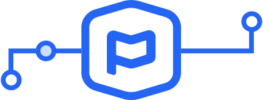

We Love Developers
Planning Center is a development driven company. Over half our staff are either developers or designers who code. Even our founder spends much of his time programming. Let’s build some stuff!
About Our API
There’s a single API for all of Planning Center. Our API currently interfaces with Check-Ins, and Giving, People, Resources, Services, with plans to add additional endpoints in the near future. It conforms to the JSON API 1.0 specification, so you need to know how to interpret, traverse, store, and manage that data type.
For Churches
Your tech team can use our API to explore and manipulate your data for a variety of purposes — like creating a church directory, compiling a song book, running custom reports, or whatever else you dream up.
To get started, you’ll need a login to an active Planning Center organization and a Developer Access Token. Each token has an Application ID and a Secret you can use to connect to your Planning Center account.
For App Teams
You can use our API to build an integration between your app and Planning Center — whether you have a texting app that wants to pull lists from People, a donations app that wants to sync payments to Giving, or anything in between.
Getting Started
You’ll need a login to an active Planning Center organization. If you don’t have one, it’s easy to create a new organization (using all free subscription levels if needed) and fill it with some sample data to work with. Then you can create and register your application.
When You're Done
When you’ve completed your integration, let us know! We’d like to see how it works and maybe include it on our integration page. Fill out a form so our team has all the information they need to review your integration. We’ll be in touch with a timeline for review and next steps.
The Planning Center API always acts under the permission levels of the person who has connected it. For churches, that’s the person who generates the Developer Access Token. For App Teams, it’s the person (your user) who initiates the OAuth connection from your app into Planning Center. This should probably be an organization administrator (a role that has wide permissions across Planning Center) so that the app you’re building can do what it needs to do. If you plan to use the Giving part of our API, that person will need to be a Giving administrator as well.